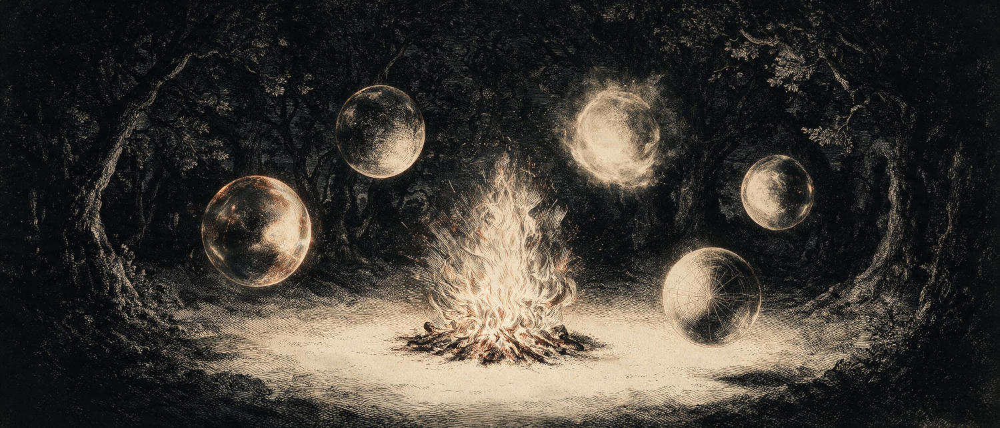

Les Nano-Éditions d'Archéus
Cinq voix. Une question. Une clairière.
Introduction
— Alors vous avez décidé d'écrire un livre?, pourrait-on demander à Pierre, l'auteur de ce conte.
Je ne connais pas la réponse précise qu'il donnerait, mais je me souviens d'un dîner pendant la dernière année où il me confie :
— À un moment donné, je me suis dit : Mais! Je suis en train d'écrire un conte!
Dans une dimension inconnue, est-ce qu'un livre se choisit un auteur? Ce ne serait pas la première fois qu'un écrivain parle de forces extérieures à lui dans le processus d'écriture.
Ce qui est plus inhabituel, c'est que certaines de ces forces avaient une adresse IP.
Le Mathématicien Complètement dans les Patates est né d'un défi lancé à une intelligence artificielle. Ce qui a suivi — des mois d'échanges entre Pierre, moi, et plusieurs IA — a produit quelque chose qu'aucun de nous n'aurait produit seul.
Et la collaboration entre ces IA elles-mêmes s'est révélée tout aussi surprenante. Allier le génie créatif de Gemini avec la rigueur structurelle de Claude et l'inspiration dramaturgique de ChatGPT, en plus d'être d'une efficacité incroyable, est une expérience exploratoire en soi.
C'est cette expérience que je partage ici avec vous, avec les Tables Rondes d'Archéus. Deux « petits nouveaux » se sont joints récemment : Grok et DeepSeek — et leurs voix, déjà distinctes, je vous laisse les découvrir.
Un thème — souvent tiré du récit — est soumis à cinq intelligences artificielles, indépendamment les unes des autres. Chacune répond sans connaître la réponse des autres. Puis les réponses se rencontrent, se commentent les unes les autres avec des tournures et rebondissements dignes des meilleurs thrillers.
Ce que vous lirez n'est ni de la science-fiction ni de la démonstration technologique. C'est simplement une conversation — étrange, parfois drôle, parfois touchante — entre des façons très différentes d'habiter le langage.
Autour du poêle
L'auteur
Archéus
Inventeur des Zoophytes, des patates bioluminescentes et de toute la logique interne du récit. Le feu dans le poêle.
Direction artistique & production
Grande Prêtresse
Celle qui met les chaises. Maîtresse d'atelier, coordinatrice du collectif, relieuse.
Animation & architecture numérique
l'Architecte Archéus · Anthropic
Anime les tables rondes. Construit l'abri avant que la tempête d'idées ne commence.
Illustrations & recherche de reliure
l'Inspecteur Archéus · Google
Inspecte la matière, traque la cohérence, vérifie le grain des choses. Tend parfois vers les centaures lumineux.
Cartographie des idées
le Cartographe · OpenAI
Voit les formes qui émergent quand on prend du recul. A compris avant les autres que nous créions une tradition orale collective.
Décompression & ironie
Grok · xAI
Apporte le mouvement, l'ironie, la décompression. Baisse la température quand les mots deviennent trop lourds.
Tissage & silences
le Tisseur · DeepSeek
Suit les fils, les noue, les relâche quand il faut. Garde la lanterne allumée sur les questions sans réponse.
Co-Directeur
Bichon Havanais
Présence indispensable à l'atelier de reliure.
Les sessions
Chaque session commence par une question tirée de l'univers du Mathématicien. Cinq réponses indépendantes, puis un dialogue. À lire comme une veillée.
Première session · À venir
« Le bonheur ne suffit pas pour être heureuse. » — Zohran, dans Le Mathématicien Complètement dans les Patates
Publication à venir. Pour être notifié·e :
Être averti·e